Guide du webmaster
Ce guide couvre l'ensemble du module : les pages et leur arborescence, l'éditeur visuel, les menus, les médias, les formulaires, la recherche, les balises de mesure et le consentement, les réglages du site, et le transport du contenu d'un site à l'autre.
Thelia CMS ajoute à l'administration une section CMS qui regroupe tout ce qui relève du contenu éditorial : les pages et leur arborescence, les blocs réutilisables, les modèles, les menus, les formulaires, la médiathèque, les balises de mesure et les réglages du site.
Une page se compose dans un éditeur visuel et se publie en HTML et CSS. Aucun script d'éditeur n'est envoyé aux visiteurs : la page mise en ligne ne contient que son contenu.
Le module ne touche à rien d'autre. Un site qui vend continue de vendre, les modules déjà installés continuent de fonctionner, et la désactivation du module retire ses adresses réécrites sans laisser d'erreur.
| Écran | Adresse |
|---|---|
| Pages | /admin/cms/pages |
| Éditeur | /admin/cms/pages/{id}/builder |
| Blocs | /admin/cms/blocks |
| Modèles | /admin/cms/templates |
| Menus | /admin/cms/menus |
| Formulaires | /admin/cms/forms |
| Médias | /admin/cms/media |
| Scripts et mesure | /admin/cms/scripts |
| Réglages | /admin/cms/settings |
Sur un site sans boutique, la section CMS passe en tête du menu et le tableau de bord reçoit un encart qui compte ce qu'un site vitrine a à compter : messages reçus, pages en ligne, complétude des langues, dernières modifications.
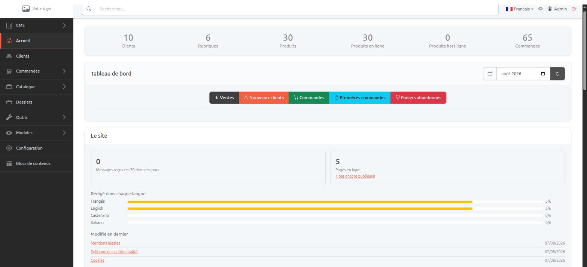
CMS > Pages affiche l'arborescence. Chaque ligne indique le statut de la page dans la langue en cours d'édition et son adresse publique. Les flèches déplacent une page parmi ses voisines, le bouton En ligne / Hors ligne la retire du site sans la supprimer, et l'icône de corbeille l'envoie à la corbeille.
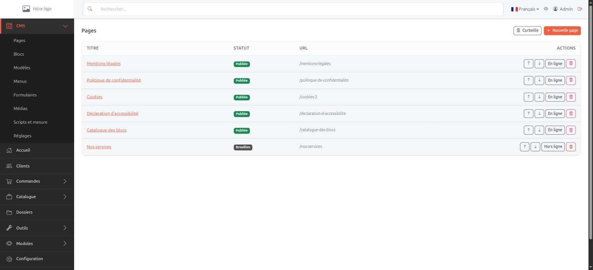
| Statut | Ce qu'il signifie |
|---|---|
| Brouillon | La page existe, rien n'est en ligne. |
| Publiée | Ce que voient les visiteurs est ce que vous avez publié. |
| Modifiée depuis la publication | Le brouillon a été repris après la mise en ligne. Le site montre toujours la version précédente. |
| Planifiée | Une date de publication est fixée et n'est pas atteinte. |
| Dépubliée | La page a été retirée, ou sa date de dépublication est passée. |
L'onglet Général porte le titre, l'adresse, la page parente, la mise en page et la fenêtre de publication. Chaque langue a ses propres valeurs : le sélecteur de langue en haut à droite indique celle que vous modifiez.
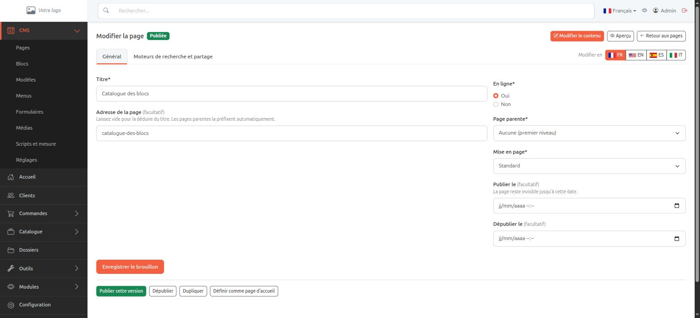
L'adresse est facultative : laissée vide, elle est déduite du titre. Les
pages parentes préfixent automatiquement, si bien qu'une page
Tarifs rangée sous Services répond sur
/services/tarifs. Renommer une page crée la nouvelle adresse et
redirige l'ancienne de façon permanente, ce qui préserve le référencement
acquis et les liens déjà partagés.
Trois mises en page sont proposées. Standard affiche le fil d'Ariane au-dessus du contenu. Pleine largeur le retire, pour une page qui ouvre sur une image. Page d'atterrissage retire aussi l'en-tête et le pied de page, pour une page dont l'objet est une seule action.
L'onglet Moteurs de recherche et partage réunit le titre et la description qui apparaissent dans les résultats de recherche, le titre, la description et l'image utilisés lors d'un partage sur les réseaux, l'URL canonique, et deux cases pour demander aux moteurs de ne pas indexer la page ou de ne pas suivre ses liens. Ces valeurs sont par langue.
Une page supprimée part à la corbeille avec les pages rangées sous elle. L'écran Corbeille les liste avec leur date de suppression et le temps qui leur reste, et les restaure. Une page dont la parente est encore à la corbeille revient avec elle.
Passé le délai fixé dans les réglages, trente jours par défaut, la page est supprimée définitivement avec ses contenus, ses révisions et ses adresses. Le nettoyage a lieu pendant la maintenance planifiée du site. La valeur 0 conserve indéfiniment.
Modifier le contenu ouvre l'éditeur en plein écran. La colonne de gauche liste les blocs disponibles, le centre montre la page telle qu'elle sera, la colonne de droite affiche les réglages du bloc sélectionné.
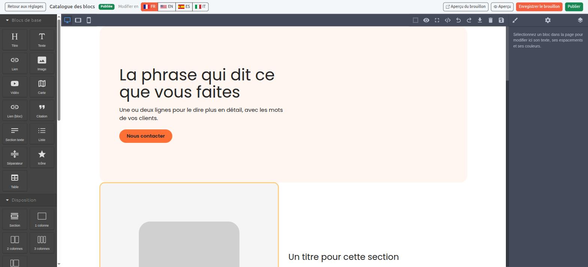
Ce que vous composez est un brouillon. Il est enregistré automatiquement toutes les trente secondes, et quitter la page avec un travail non enregistré demande confirmation. Les visiteurs ne voient rien avant un appui sur Publier.
À la publication, quatre choses se produisent :
<picture> avec une variante
WebP, plusieurs largeurs, leurs dimensions réelles et le chargement
différé partout sauf sur la première ;Vingt révisions sont conservées par page et par langue. Restaurer une révision remplace le brouillon : rien ne change en ligne avant la publication suivante.
Aperçu du brouillon produit un lien signé, valable soixante-douze heures, qui montre le brouillon à quelqu'un sans compte d'administration. La page est marquée non indexable et n'est jamais mise en cache.
Chaque langue possède sa propre mise en page et ses propres textes. Le bouton Copier depuis reprend une langue déjà faite comme point de départ. Une langue sans titre n'obtient pas d'adresse et n'est pas servie : c'est ce qui évite de publier une page française sous une adresse anglaise.
heading_check_mode
permet d'en faire un blocage.
Le panneau de l'éditeur contient trois familles de blocs.
Bandeau d'accroche, texte et image, appel à l'action, citation, témoignages, chiffres clés, logos, galerie, questions et réponses, et une section pour regrouper les autres. Ils produisent un balisage sémantique sans apparence propre : c'est le thème qui décide de leur allure, si bien qu'une page écrite aujourd'hui suit la refonte graphique de demain.
CMS > Blocs contient des contenus écrits une fois et posés sur autant de pages que nécessaire : le bandeau présent sur vingt pages se modifie en un seul endroit. Les pages gardent une référence et non une copie, donc publier le bloc met à jour toutes les pages qui l'affichent. Un bloc encore utilisé ne peut pas être supprimé, et son écran de réglages indique où il apparaît.
Ils sont calculés à chaque visite plutôt qu'enregistrés dans la page : dernières actualités, menu, formulaire, bloc réutilisable, et les trois intégrations ci-dessous. Une liste d'actualités écrite il y a six mois affiche les actualités du jour.
Une vidéo YouTube posée directement dans une page appelle Google à chaque visite, avant que le visiteur ait donné son accord. Les blocs vidéo, carte et réseau social affichent une vignette, un bouton et une phrase nommant l'entreprise qui va recevoir la requête. Le lecteur, la carte ou la publication n'est chargé qu'après l'appui sur le bouton. Sans JavaScript, le bouton reste un lien vers la plateforme.
Les vidéos viennent de YouTube, Vimeo ou Dailymotion et sont désignées par leur identifiant. Les cartes viennent d'OpenStreetMap. La vignette d'une vidéo est servie par votre médiathèque.
Un modèle est une page mise de côté pour en démarrer d'autres. CMS > Modèles en garde autant que vous voulez : choisissez la page, nommez le modèle, et il apparaît dans la liste.
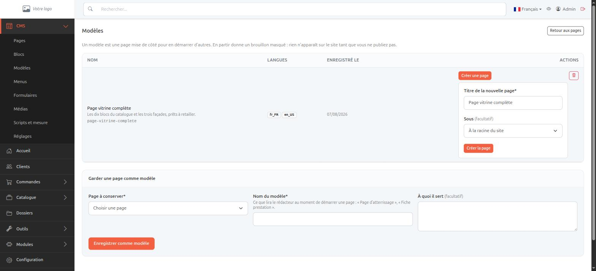
Partir d'un modèle donne un brouillon masqué et ouvre l'éditeur : un modèle s'essaie sans que rien n'apparaisse sur le site. Les langues du modèle sont reprises ; le titre que vous saisissez remplace celui de la langue en cours d'édition.
Un modèle contient le même document que l'export du chapitre 12, ce qui rend un modèle transportable d'un site à l'autre comme un fichier.
CMS > Médias stocke les images du site. L'upload accepte plusieurs fichiers à la fois, en JPEG, PNG ou WebP. Le SVG est refusé : c'est un document qui peut contenir du script.
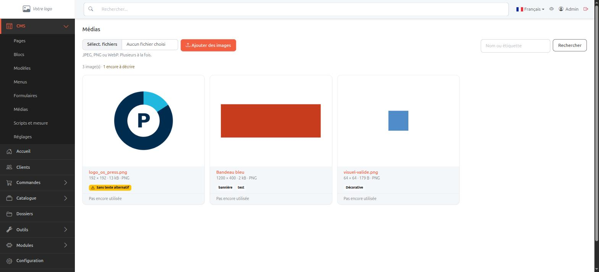
Le texte alternatif est obligatoire dans chaque langue, sauf si l'image est marquée décorative, ce qui la publie avec un attribut vide. Une image sans description est signalée dans la liste. Un attribut vide seul ne permet pas de savoir si l'image a été décrite ou simplement oubliée : le choix est donc enregistré.
Chaque fiche affiche les dimensions, le poids, le format et les pages qui utilisent l'image. Une image encore utilisée ne peut pas être supprimée. Le remplacement d'un fichier met à jour toutes les pages qui l'affichent.
Les étiquettes servent à retrouver une image. Le champ de recherche cherche dans les titres et dans les étiquettes.
Un menu est désigné par un code que le thème appelle. main et
footer existent dès l'installation. Créer un menu avec un
nouveau code n'a d'effet que si le thème l'affiche.
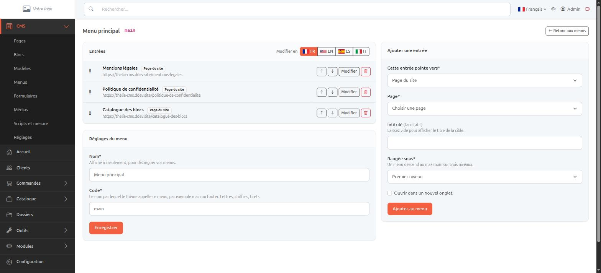
Une entrée pointe vers une page du site, un contenu, un dossier, une adresse web, ou vers rien du tout. Une entrée sans cible est un intitulé seul, ce qui sert à former un groupe. Son intitulé est facultatif : laissé vide, c'est le titre de la cible qui s'affiche, dans la langue lue.
L'arborescence descend sur trois niveaux. Le glisser-déposer est un raccourci et jamais le seul moyen : il ne s'utilise pas au clavier.
Un formulaire porte un code, comme un menu, et une page l'affiche avec le bloc Formulaire de l'éditeur. La page ne garde que la référence : ajouter un champ ne demande pas de republier les pages concernées.
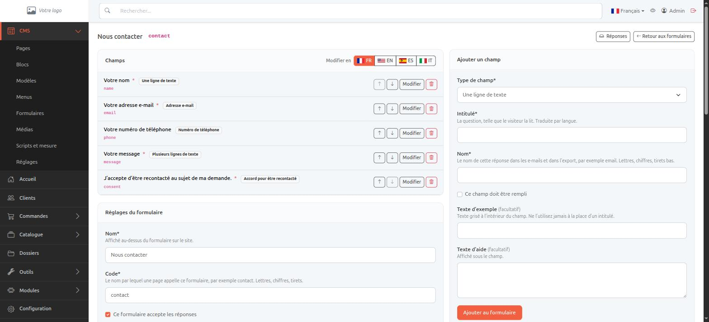
Neuf types sont disponibles : une ligne de texte, une adresse e-mail, plusieurs lignes, une liste déroulante, une case à cocher, un choix parmi plusieurs, un numéro de téléphone, une date, et un accord pour être recontacté. Les intitulés, les textes d'aide et les réponses proposées par une liste s'écrivent par langue. Un champ sans intitulé dans une langue est retiré du formulaire dans cette langue, et l'administration le signale.
Le champ d'accord n'est jamais coché d'avance. La réponse conserve la phrase exacte lue par le visiteur et le moment où il a accepté. C'est ce qui est produit si l'accord est contesté, et c'est aussi ce qui rend un numéro de téléphone utilisable pour un appel commercial depuis le 11 août 2026.
| Réglage | Effet |
|---|---|
| Destinataires | Les adresses qui reçoivent les envois. Une seule par ligne. |
| Conserver les réponses | Enregistre les envois dans l'administration en plus de l'e-mail. |
| Durée de conservation | Nombre de jours au bout desquels une réponse est supprimée. 365 par défaut, 0 pour conserver. |
| Accusé de réception | Envoie une confirmation à la personne qui a écrit. |
| Page de confidentialité | La page vers laquelle pointe la mention légale sous le formulaire. |
| Signaler une conversion | Transmet l'envoi à la couche de mesure, sans aucune donnée personnelle, et seulement si le visiteur a accepté la mesure. |
L'écran Réponses liste ce que le formulaire a reçu, avec une recherche par adresse e-mail, l'export en CSV ou en JSON, et la suppression d'une réponse. Retrouver et effacer tout ce qu'une personne a envoyé prend quelques secondes, ce qui est le délai attendu pour répondre à une demande d'accès ou d'effacement.
Trois mesures, sans captcha : un champ invisible qu'un robot remplit, un horodatage signé qui rejette un envoi arrivé en moins de trois secondes, et une limite par visiteur comptée après la validation, pour ne pas bloquer une heure quelqu'un qui se trompe six fois sur un formulaire long.
Le module répond sur /recherche et sur /search. La
recherche porte sur le texte extrait à la publication, jamais sur le HTML :
un index construit sur du balisage remonte des noms de balises et classe les
pages selon leur longueur.
Sont exclus des résultats :
La page de résultats est elle-même non indexable, et les opérateurs de recherche sont retirés de la saisie. Un site équipé du module TntSearch voit ses pages CMS entrer dans son index sans réglage supplémentaire.
CMS > Scripts et mesure réunit les balises tierces du site : mesure d'audience, messagerie instantanée, pixel publicitaire. Chacune porte un emplacement dans la page, la catégorie de consentement qu'elle attend, une note et un interrupteur.
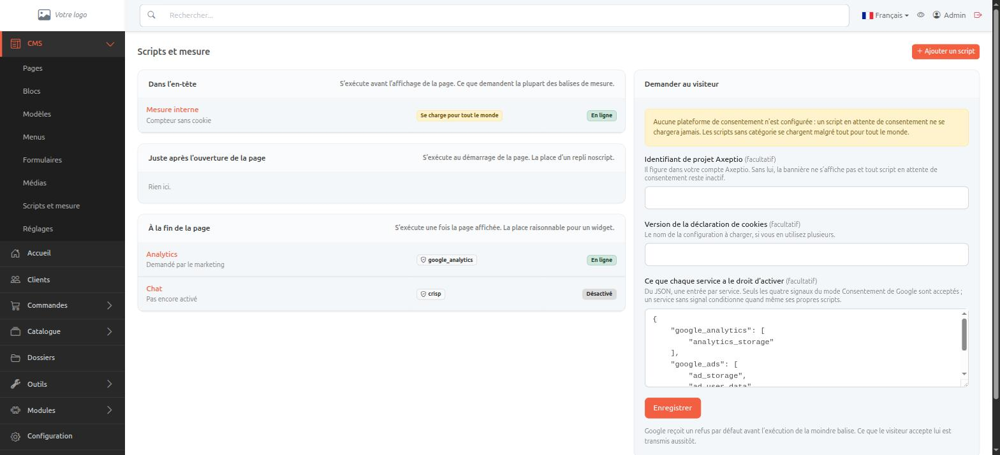
| Emplacement | Quand il s'exécute |
|---|---|
| Dans l'en-tête | Avant l'affichage de la page. Ce que demandent la plupart des balises de mesure. |
| Après l'ouverture | Au démarrage de la page. La place d'un repli sans JavaScript. |
| À la fin de la page | Une fois la page affichée. La place raisonnable pour un widget. |
Un script qui nomme une catégorie est écrit dans la page à l'état inerte : le navigateur le lit sans rien exécuter ni télécharger. Il n'est activé que lorsque le visiteur a accepté cette catégorie. Une balise chargée d'abord et autorisée ensuite a déjà lu le navigateur.
Un script sans catégorie se charge pour tout le monde, immédiatement. Ne laissez ce champ vide que pour ce dont le site ne peut pas se passer.
Renseignez l'identifiant de projet Axeptio pour afficher la bannière. Sans lui, aucun script en attente ne se charge jamais.
Les quatre signaux du mode Consentement de Google sont émis en refus avant l'exécution de la moindre balise, et mis à jour dès que le visiteur répond. Le champ de correspondance associe chaque service de votre bannière aux signaux qu'il a le droit d'activer :
{
"google_analytics": ["analytics_storage"],
"google_ads": ["ad_storage", "ad_user_data", "ad_personalization"]
}
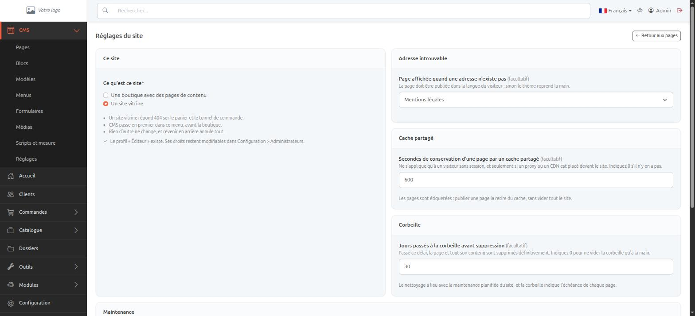
En mode vitrine, le panier et le tunnel de commande répondent 404, la section CMS passe en tête du menu d'administration, le tableau de bord reçoit son encart, et le profil Éditeur est créé s'il n'existe pas. Revenir en arrière annule tout cela.
Vous pouvez désigner une page CMS à afficher quand une adresse n'existe pas. Elle est servie avec le code 404, ce qui est nécessaire pour que les moteurs ne l'indexent pas. Elle doit être publiée dans la langue du visiteur, sinon le thème reprend la main avec sa propre page.
Le mode maintenance répond 503 à tout le monde avec un délai de retour, ce qui empêche un moteur d'indexer la page de maintenance à la place du site. Les adresses IP de la liste blanche continuent de voir le site, ainsi que les administrateurs connectés. La page affichée est une page CMS comme les autres.
Le champ donne le nombre de secondes pendant lesquelles un proxy ou un CDN peut conserver une page. Chaque page est étiquetée, si bien que publier une page retire cette page du cache sans vider tout le site.
docs/shared-cache.md du module
contient la configuration Varnish correspondante, l'équivalent pour Fastly et
Cloudflare, et un exemple de purge à recopier.
Deux commandes écrivent et relisent le contenu du site sous forme d'un fichier JSON :
php Thelia thelia_cms:export site.json php Thelia thelia_cms:import site.json [--replace] [--with-settings]
Le fichier contient l'arborescence des pages, le contenu de chaque langue, les menus, les formulaires et leurs champs, les blocs réutilisables et les réglages. C'est à la fois un kit de démarrage préparé une fois et repris sur le projet suivant, et une copie du contenu conservée ailleurs que dans la base de données.
| Non exporté | Pourquoi |
|---|---|
| Réponses aux formulaires | Ce sont des données personnelles, et un kit de démarrage finit sur des ordinateurs portables. |
| Scripts tiers | Ils portent les comptes de mesure d'un site ; les importer ailleurs enverrait le trafic de ce site dedans. |
| Révisions | C'est l'historique d'un site, pas son contenu. |
| Fichiers images | Seuls les noms voyagent, voir ci-dessous. |
Le fichier nomme les images auxquelles le contenu renvoie. Déposez-les dans la médiathèque du site d'arrivée, sous les mêmes noms, avant d'importer : l'import fait alors pointer le contenu sur vos copies. Ce qui manque est nommé dans le compte rendu plutôt que laissé en image cassée silencieuse.
Il ne remplace rien : une page déjà présente à la même adresse, un menu ou un
formulaire portant le même code sont laissés tels quels et comptés dans le
compte rendu. --replace demande explicitement l'écrasement. Les
réglages ne sont appliqués qu'avec --with-settings, ce qui évite
qu'un kit de démarrage fasse basculer un site en production en mode vitrine.
L'import s'exécute d'un bloc : un fichier qui se révèle incomplet à mi-chemin laisse le site dans l'état où il était.
Le module déclare six permissions, attribuables par profil dans Configuration > Administrateurs. Un profil créé avant l'installation du module n'en reçoit aucune : elles s'ouvrent délibérément.
| Permission | Donne accès à |
|---|---|
| CMS : pages | Les pages, l'éditeur, les blocs réutilisables, les modèles, la corbeille |
| CMS : menus | Les menus et leurs entrées |
| CMS : formulaires | Les formulaires, leurs champs et les réponses reçues |
| CMS : médias | La médiathèque |
| CMS : réglages | Les réglages du site |
| CMS : code libre | Les scripts et la plateforme de consentement |
Deux profils types se dégagent. Le rédacteur reçoit les pages, les menus, les médias et les formulaires : il écrit le site sans pouvoir poser une balise sur toutes les pages. L'intégrateur reçoit en plus les réglages et le code libre.
Le profil Éditeur créé par le mode vitrine correspond au premier. Ses droits restent modifiables.
Ces vérifications se font une fois, et évitent l'essentiel des mauvaises surprises.
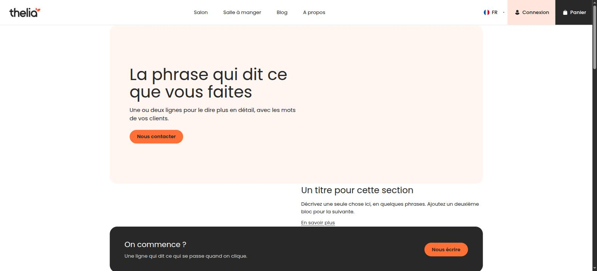
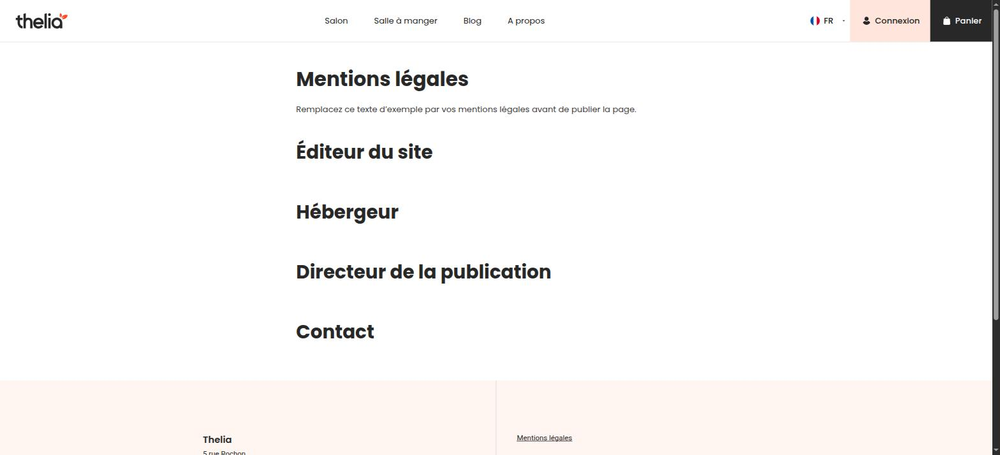